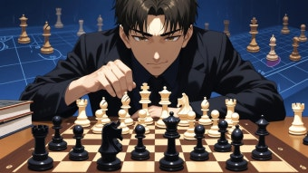

전술을 배우는 이유
체스에서 전술은 상대의 실수를 놓치지 않고 점수로 바꾸는 힘입니다. 포크, 핀, 발견 공격처럼 기본 패턴을 익히면 공격과 수비를 더 정확하게 할 수 있습니다.
기본 전술
전술은 몇 수 안에 기물을 따내거나 체크메이트 기회를 만드는 기술입니다.
자주 나오는 패턴을 알면 경기 중 좋은 수를 더 빨리 찾을 수 있습니다.

체스에서 전술은 상대의 실수를 놓치지 않고 점수로 바꾸는 힘입니다. 포크, 핀, 발견 공격처럼 기본 패턴을 익히면 공격과 수비를 더 정확하게 할 수 있습니다.
하나의 말이 동시에 두 개 이상의 말을 공격하는 전술입니다. 나이트 포크가 대표적입니다.
앞의 말이 움직이면 뒤의 더 중요한 말이 공격받는 상황입니다. 킹 뒤에 있는 말은 특히 움직이기 어렵습니다.
중요한 말을 먼저 공격해서 피하게 만든 뒤, 그 뒤에 있던 말을 잡는 전술입니다.
앞을 막고 있던 말이 움직이면서 뒤의 룩, 비숍, 퀸이 공격을 시작하는 전술입니다.
한 수로 두 가지 위협을 동시에 만드는 방법입니다. 상대는 보통 둘 중 하나만 막을 수 있습니다.
상대 킹의 도망갈 칸을 막고 체크를 넣어 승리하는 형태입니다. 백랭크 메이트가 자주 나옵니다.